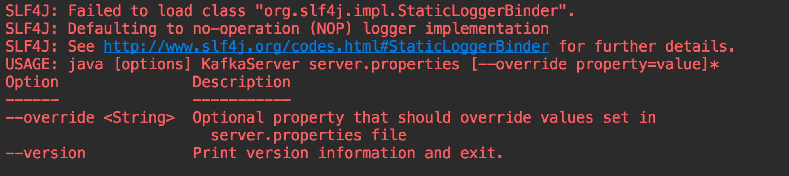
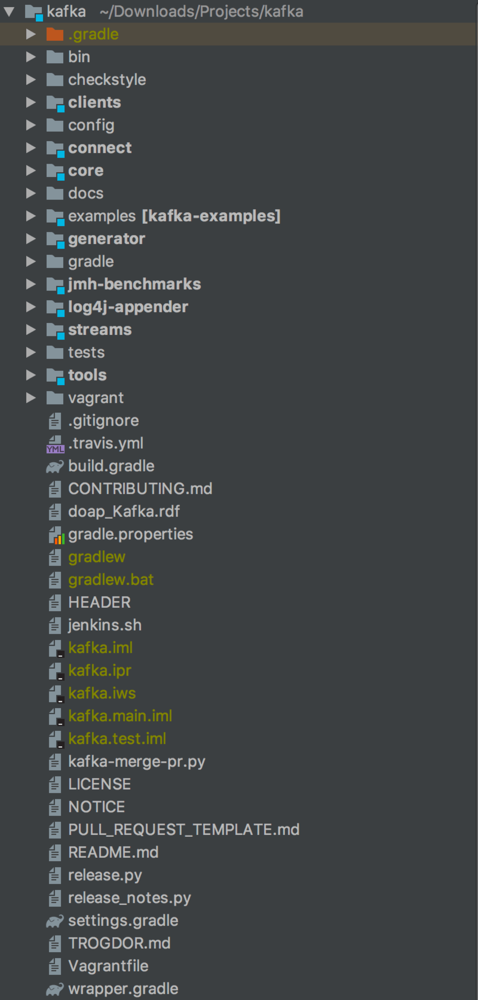
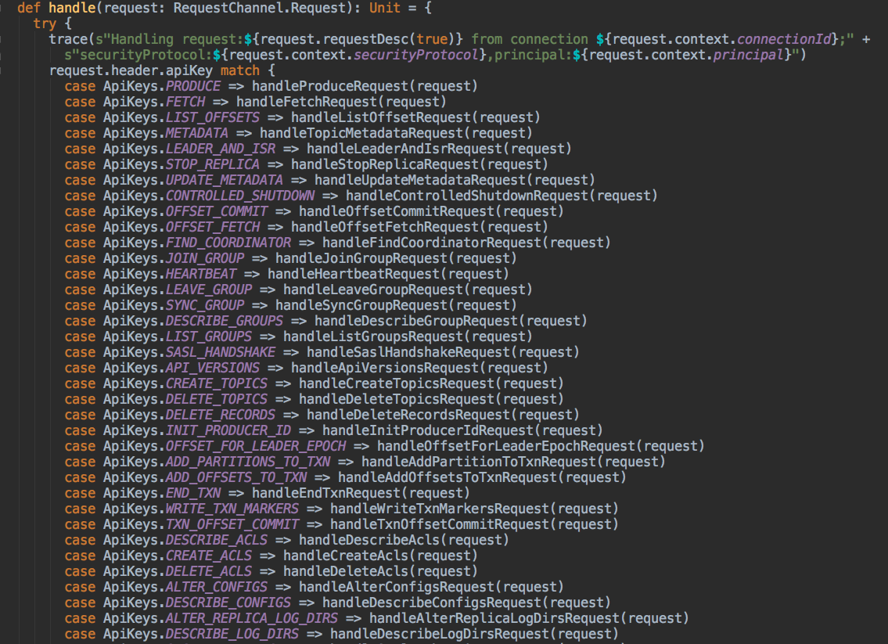
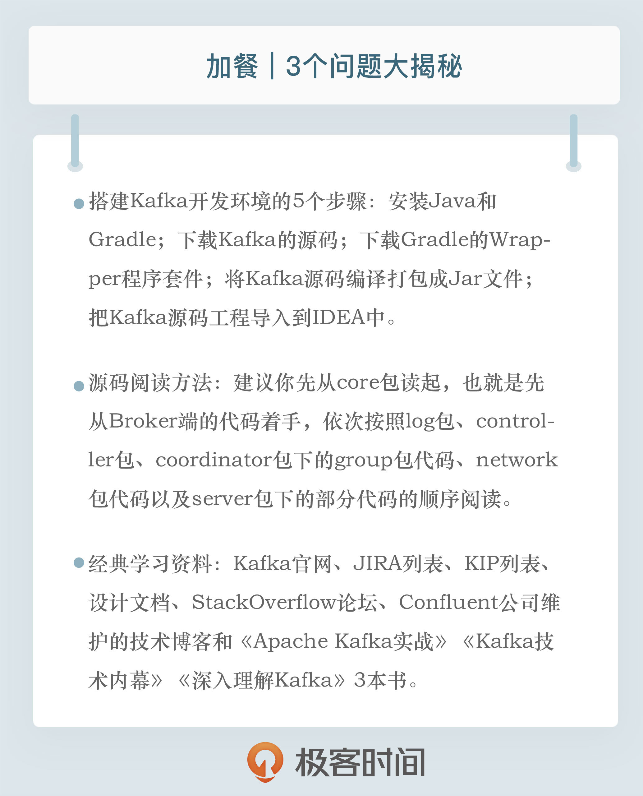

- 00 开篇词 为什么要学习Kafka？.md.html
- 01 消息引擎系统ABC.md.html
- 02 一篇文章带你快速搞定Kafka术语.md.html
- 03 Kafka只是消息引擎系统吗？.md.html
- 04 我应该选择哪种Kafka？.md.html
- 05 聊聊Kafka的版本号.md.html
- 06 Kafka线上集群部署方案怎么做？.md.html
- 07 最最最重要的集群参数配置（上）.md.html
- 08 最最最重要的集群参数配置（下）.md.html
- 09 生产者消息分区机制原理剖析.md.html
- 10 生产者压缩算法面面观.md.html
- 11 无消息丢失配置怎么实现？.md.html
- 12 客户端都有哪些不常见但是很高级的功能？.md.html
- 13 Java生产者是如何管理TCP连接的？.md.html
- 14 幂等生产者和事务生产者是一回事吗？.md.html
- 15 消费者组到底是什么？.md.html
- 16 揭开神秘的“位移主题”面纱.md.html
- 17 消费者组重平衡能避免吗？.md.html
- 18 Kafka中位移提交那些事儿.md.html
- 19 CommitFailedException异常怎么处理？.md.html
- 20 多线程开发消费者实例.md.html
- 21 Java 消费者是如何管理TCP连接的_.md.html
- 22 消费者组消费进度监控都怎么实现？.md.html
- 23 Kafka副本机制详解.md.html
- 24 请求是怎么被处理的？.md.html
- 25 消费者组重平衡全流程解析.md.html
- 26 你一定不能错过的Kafka控制器.md.html
- 27 关于高水位和Leader Epoch的讨论.md.html
- 28 主题管理知多少_.md.html
- 29 Kafka动态配置了解下？.md.html
- 30 怎么重设消费者组位移？.md.html
- 31 常见工具脚本大汇总.md.html
- 32 KafkaAdminClient：Kafka的运维利器.md.html
- 33 Kafka认证机制用哪家？.md.html
- 34 云环境下的授权该怎么做？.md.html
- 35 跨集群备份解决方案MirrorMaker.md.html
- 36 你应该怎么监控Kafka？.md.html
- 37 主流的Kafka监控框架.md.html
- 38 调优Kafka，你做到了吗？.md.html
- 39 从0搭建基于Kafka的企业级实时日志流处理平台.md.html
- 40 Kafka Streams与其他流处理平台的差异在哪里？.md.html
- 41 Kafka Streams DSL开发实例.md.html
- 42 Kafka Streams在金融领域的应用.md.html
- 加餐 搭建开发环境、阅读源码方法、经典学习资料大揭秘.md.html
- 用户故事 黄云：行百里者半九十.md.html
- 结束语 以梦为马，莫负韶华！.md.html
- 捐赠
加餐 搭建开发环境、阅读源码方法、经典学习资料大揭秘
你好，我是胡夕。
截止到现在，专栏已经更新了38讲，你掌握得怎么样了呢？如果暂时掌握得不是很好，也没有关系，慢慢来，有问题记得在留言区留言，我们一起讨论。
今天，我们来聊点儿不一样的。我总结了3个讨论热度很高的话题，现在一一来为你“揭秘”。
- 如何搭建Kafka开发环境？很多人对于编译和调试Kafka饶有兴致，却苦于无从下手。今天我就给你完整地演示一遍搭建Kafka开发环境的过程。
- 如何阅读Kafka源码？我曾经在专栏第1讲提到过我自己阅读Kafka源码的经历，后来我收到很多留言，问我是如何阅读的，今天，我就跟你分享一些阅读Kafka源代码的比较好的法则或者技巧。
- Kafka的学习资料。幸运的是，我在这方面还是有过一些总结的，今天我会毫无保留地把资料全部分享给你。
Kafka开发环境搭建
现在，我先来回答第1个问题：如何搭建Kafka开发环境。我以IDEA为例进行说明，Eclipse应该也是类似的。
第1步：安装Java和Gradle
要搭建Kafka开发环境，你必须要安装好Java和Gradle，同时在IDEA中安装Scala插件。你最好把Java和Gradle环境加入到环境变量中。
第2步：下载Kafka的源码
完成第1步之后，下载Kafka的源码，命令如下：
$ cd Projects
$ git clone https://github.com/apache/kafka.git
这个命令下载的是Kafka的trunk分支代码，也就是当前包含所有已提交Patch的最新代码，甚至比Kafka官网上能够下载到的最新版本还要超前很多。值得注意的是，如果你想向Kafka社区贡献代码，通常要以trunk代码为主体进行开发。
第3步：下载Gradle的Wrapper程序套件
代码下载完成之后，会自动创建一个名为kafka的子目录，此时需要进入到该目录下，执行下面的这条命令，主要目的是下载Gradle的Wrapper程序套件。
$ gradle
Starting a Gradle Daemon (subsequent builds will be faster)
> Configure project :
Building project 'core' with Scala version 2.12.9
Building project 'streams-scala' with Scala version 2.12.9
Deprecated Gradle features were used in this build, making it incompatible with Gradle 6.0.
Use '--warning-mode all' to show the individual deprecation warnings.
See https://docs.gradle.org/5.3/userguide/command_line_interface.html#sec:command_line_warning
第4步：将Kafka源码编译打包成Jar文件
现在，你可以运行下列命令，将Kafka源码编译打包成Jar文件：
./gradlew clean releaseTarGz
通常你需要等待一段时间，经过一系列操作之后，比如Gradle拉取依赖Jar包、编译Kafka源码、打包等，你可以在core的build/distributions下面找到生成的tgz包：kafka_2.12-2.4.0-SNAPSHOT。解压之后，这就是一个可以正常启动运行的Kafka环境了。
第5步：把Kafka源码工程导入到IDEA中
这也是搭建开发环境的最后一步。你可以先执行下面的命令去创建IDEA项目所需要的项目文件：
$ ./gradlew idea #如果你用的是Eclipse，执行./gradlew eclipse即可
接着，你需要打开IDEA，选择“打开工程”，然后再选择kafka目录即可。
至此，我们就在IDEA中搭建了Kafka源码环境。你可以打开Kafka.scala文件，右键选择“运行”，这时，你应该可以看到启动Kafka Broker的命令行用法说明，如下图所示：

总体来说，Kafka工程自从由使用sbt改为使用Gradle管理之后，整个项目的编译和构建变得简单多了，只需要3、4条命令就能在本机环境中搭建测试开发环境了。
Kafka源码阅读方法
搭建好了开发环境，下一步自然就是阅读Kafka源码并尝试自行修改源码了。下图是IDEA上Kafka工程的完整目录列表。

在这张图中，有几个子目录需要你重点关注一下。
- core：Broker端工程，保存Broker代码。
- clients：Client端工程，保存所有Client代码以及所有代码都会用到的一些公共代码。
- streams：Streams端工程，保存Kafka Streams代码。
- connect：Connect端工程，保存Kafka Connect框架代码以及File Connector代码。
我之前说过，Kafka源码有50万行之多，没有重点地进行通读，效率会特别低。最初我就是盲读源码的，深感效果极差，所以，我觉得非常有必要为你推荐几条最佳实践。
我建议你先从core包读起，也就是先从Broker端的代码着手。你可以按照下面的顺序进行阅读。
- log包。log包中定义了Broker底层消息和索引保存机制以及物理格式，非常值得一读。特别是Log、LogSegment和LogManager这几个类，几乎定义了Kafka底层的消息存储机制，一定要重点关注。
- controller包。controller包实现的是Kafka Controller的所有功能，特别是里面的KafkaController.scala文件，它封装了Controller的所有事件处理逻辑。如果你想弄明白Controller的工作原理，最好多读几遍这个将近2000行的大文件。
- coordinator包下的group包代码。当前，coordinator包有两个子package：group和transaction。前者封装的是Consumer Group所用的Coordinator；后者封装的是支持Kafka事务的Transaction Coordinator。我个人觉得你最好把group包下的代码通读一遍，了解下Broker端是如何管理Consumer Group的。这里比较重要的是GroupMetadataManager和GroupCoordinator类，它们定义了Consumer Group的元数据信息以及管理这些元数据的状态机机制。
- network包代码以及server包下的部分代码。如果你还有余力的话，可以再读一下这些代码。前者的SocketServer实现了Broker接收外部请求的完整网络流程。我们在专栏第24讲说过，Kafka用的是Reactor模式。如果你想搞清楚Reactor模式是怎么在Kafka“落地”的，就把这个类搞明白吧。
从总体流程上看，Broker端顶部的入口类是KafkaApis.scala。这个类是处理所有入站请求的总入口，下图展示了部分请求的处理方法：

你可以进到不同的方法里面去看实际的请求处理逻辑。比如handleProduceRequest方法是处理Producer生产消息请求的，而handleFetchRequest方法则是处理消息读取请求的。
我们刚刚说的都是core代码包下的重要类文件。在客户端clients包下，我推荐你重点阅读4个部分的内容。
- org.apache.kafka.common.record包。这个包下面是各种Kafka消息实体类，比如用于在内存中传输的MemoryRecords类以及用于在磁盘上保存的FileRecords类。
- org.apache.kafka.common.network包。这个包不用全看，你重点关注下Selector、KafkaChannel就好了，尤其是前者，它们是实现Client和Broker之间网络传输的重要机制。如果你完全搞懂了这个包下的Java代码，Kafka的很多网络异常问题也就迎刃而解了。
- org.apache.kafka.clients.producer包。顾名思义，它是Producer的代码实现包，里面的Java类很多，你可以重点看看KafkaProducer、Sender和RecordAccumulator这几个类。
- org.apache.kafka.clients.consumer包。它是Consumer的代码实现包。同样地，我推荐你重点阅读KafkaConsumer、AbstractCoordinator和Fetcher这几个Java文件。
另外，在阅读源码的时候，不管是Broker端还是Client端，你最好结合Java调试一起来做。通过Debug模式下打断点的方式，一步一步地深入了解Kafka中各个类的状态以及在内存中的保存信息，这种阅读方式会让你事半功倍。
Kafka推荐学习资料
如果你暂时对搭建开发环境或阅读源码没有兴趣，但又想快速深入地学习Kafka的话，直接学习现成的资料也不失为一个妙法。接下来，我就向你推荐一些很有价值的Kafka学习资料。
第1个不得不提的当然就是Kafka官网。很多人会忽视官网，但其实官网才是最重要的学习资料。你只需要通读几遍官网，并切实掌握里面的内容，就已经能够较好地掌握Kafka了。
第2个是Kafka的JIRA列表。当你碰到Kafka抛出的异常的时候，不妨使用异常的关键字去JIRA中搜索一下，看看是否是已知的Bug。很多时候，我们碰到的问题早就已经被别人发现并提交到社区了。此时，JIRA列表就是你排查问题的好帮手。
第3个是Kafka KIP列表。KIP的全称是Kafka Improvement Proposals，即Kafka新功能提议。你可以看到Kafka的新功能建议及其讨论。如果你想了解Kafka未来的发展路线，KIP是不能不看的。当然，如果你想到了一些Kafka暂时没有的新功能，也可以在KIP中提交自己的提议申请，等待社区的评审。
第4个是Kafka内部团队维护的设计文档。在这里，你几乎可以找到所有的Kafka设计文档。其中关于Controller和新版本Consumer的文章都很有深度，我建议你一定要重点读一读。
第5个是著名的StackOverflow论坛。当今，StackOverflow论坛对程序员意味着什么，想必我不说你也知道。这里面的Kafka问题很有深度。事实上，从仅仅是StackOverflow上的一个问题，到最后演变成了Kafka的Bug修复或新功能实现的情况屡见不鲜。
第6个是Confluent公司维护的技术博客。这是Kafka商业化公司Confluent团队自己维护的技术博客，里面的技术文章皆出自Kafka Committer之手，质量上乘，我从中受益匪浅。比如讲述Kafka精确一次处理语义和事务的文章，含金量极高，你一定要去看一下。
第7个是我自己的博客。我会定期在博客上更新Kafka方面的原创文章。有的是我对Kafka技术的一些理解，有的是Kafka的最新动态。虽然不是国内质量最好的，但应该是坚持时间最长的。毕竟，我这个博客就只有Kafka的内容，而且已经写了好几年了。
最后，我给推荐你3本学习Kafka的书。
第1本是我的《Apache Kafka实战》，我在里面总结了我这几年使用和学习Kafka的各种实战心得。这本书成书于2018年，虽然是以Kafka 1.0为模板撰写的，而Kafka目前已经出到了2.3版本，但其消息引擎方面的功能并没有什么重大变化，因此绝大部分内容依然是有效的。
第2本是《Kafka技术内幕》。我个人非常喜欢这个作者的书写风格，而且这本书内容翔实，原理分析得很透彻，配图更是精彩。
第3本是2019年新出的一本名为《深入理解Kafka》的书。这本书的作者是一位精通RabbitMQ和Kafka的著名技术人，对消息中间件有着自己独特的见解。
这些资料各有侧重，你可以根据自己的实际需求，选择相应的资料进行学习。
小结
好了，我们来小结一下。在今天的文章里，我跟你分享了很多经验，比如如何搭建Kafka开发环境、如何阅读Kafka源码等，希望这些经验可以帮你有效地节省时间，避免走一些弯路。另外，我把我收集到的相关学习资料全部列了出来，分享给你，也希望这些资料能够帮你更好地学习Kafka。
讲到这里，我想再强调一下，学习是个持续的过程。经验和外部帮助固然重要，但最关键的，还是自己要付出努力，持之以恒。
还是那句话：Stay focused and work hard！

开放讨论
最后，我们来讨论这样一个问题，你觉得学习Kafka或者任何一种技术，最重要的是什么？
欢迎写下你的思考和答案，我们一起讨论。如果你觉得有所收获，也欢迎把文章分享给你的朋友。
© 2019 - 2023 Liangliang Lee. Powered by gin and hexo-theme-book.